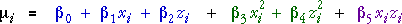

| Source of variation | SSq | df | MSq | F | p-value |
|---|---|---|---|---|---|
| Linear X | ? | 1 | ? | ? | ? |
| Linear Z | ? | 1 | ? | ? | ? |
| Quadratic X | ? | 1 | ? | ? | ? |
| Quadratic Z | ? | 1 | ? | ? | ? |
| X-Z interaction | ? | 1 | ? | ? | ? |
| Residual | ? | n - 6 | ? | ||
| Total | ? | n - 1 | |||
Analysis of variance
The quadratic response surface model for two factors uses six parameters to model the mean response,

When added sequentially to the model, each term gives the model more flexibility and allows the residual sum of squares to be reduced. These reductions are explained sums of squares that are each associated with one degree of freedom and can be laid out in an analysis of variance table.
| Source of variation | SSq | df | MSq | F | p-value |
|---|---|---|---|---|---|
| Linear X | ? | 1 | ? | ? | ? |
| Linear Z | ? | 1 | ? | ? | ? |
| Quadratic X | ? | 1 | ? | ? | ? |
| Quadratic Z | ? | 1 | ? | ? | ? |
| X-Z interaction | ? | 1 | ? | ? | ? |
| Residual | ? | n - 6 | ? | ||
| Total | ? | n - 1 | |||
The p-values for the two quadratic terms and the interaction allow for hypothesis tests of the significance of these terms and can be used to assess whether a simpler model would fit the data equally well.
Chemical process yield
The anova table below is for the 12 observations in the chemical yield example on the previous page.
| Source of variation | SSq | df | MSq | F | p-value |
|---|---|---|---|---|---|
| Linear time | 15.318 | 1 | 15.318 | 3.82 | 0.099 |
| Linear temperature | 1.048 | 1 | 1.048 | 0.26 | 0.628 |
| Quadratic time | 15.504 | 1 | 15.504 | 3.86 | 0.097 |
| Quadratic temperature | 61.256 | 1 | 61.256 | 15.26 | 0.008 |
| Time-temp interaction | 95.063 | 1 | 95.063 | 23.68 | 0.003 |
| Residual | 24.088 | 6 | 4.015 | ||
| Total | 212.276 | 11 | |||
From the p-values in this table, we would conclude that there is strong evidence of interaction between the effects of temperature and water content and strong evidence of curvature in temperature, but only extremely weak evidence that a quadratic term in time is needed.
The diagram below shows how the response surface changes when the quadratic terms and interaction are added to the model
Firstly click the checkbox Interaction term to add an interaction to the model.
Next add the quadratic term in temperature by clicking the checkbox Quadratic term in Temperature.
Now click the x-z rotation button and investigate the different models, both when displayed as colours and as contours.
Finally add the quadratic term in time to the model and observe that the response surface again changes. From the response surfaces with and without the quadratic term in time, we would conclude that:
The highest yield results from a high temperature (150 or higher) and low reaction time (80 minutes or less). Combinations of (high temperature & high reaction time) and (low temperature & low reaction time) result in very poor yield.
Testing lack of fit
In many designs, there are replicates at some design points. The centre point of the design is often replicated several times, but there are also occasionally replicates elsewhere in the design. When this occurs, the residual sum of squares can be split into two sums of squares — a pure error sum of squares that describes variability within replicates and a lack-of-fit sum of squares that can be used to test whether the full quadratic model is adequate.
In the resulting anova table, all sums of squares are compared to the pure error sum of squares.
Chemical process yield
In the design that was used for this experiment, the centre point was replicated 4 times, so the pure error sum of squares, which measures variability within replicates therefore has (4 - 1) = 3 degrees of freedom.
Since there are 9 distinct design points and 6 parameters in the full quadratic model, the lack-of-fit sum of squares has (9 - 6) = 3 degrees of freedom.
The anova table is shown below.
| Source of variation | SSq | df | MSq | F | p-value |
|---|---|---|---|---|---|
| Linear time | 15.318 | 1 | 15.318 | 592 | 0.093 |
| Linear temperature | 1.048 | 1 | 1.048 | 0.40 | 0.570 |
| Quadratic time | 15.504 | 1 | 15.504 | 5.99 | 0.092 |
| Quadratic temperature | 61.256 | 1 | 61.256 | 23.66 | 0.017 |
| Time-temp interaction | 95.063 | 1 | 95.063 | 36.71 | 0.009 |
| Lack of fit | 16.320 | 3 | 5.440 | 2.10 | 0.279 |
| Residual (pure error) | 7.768 | 3 | 2.589 | ||
| Total | 212.276 | 11 | |||
The lack-of-fit sum of squares is not significant, so there is no evidence that a more general class of response surface models is needed. The other p-values are close to their earlier values, so the main conclusions are unchanged.